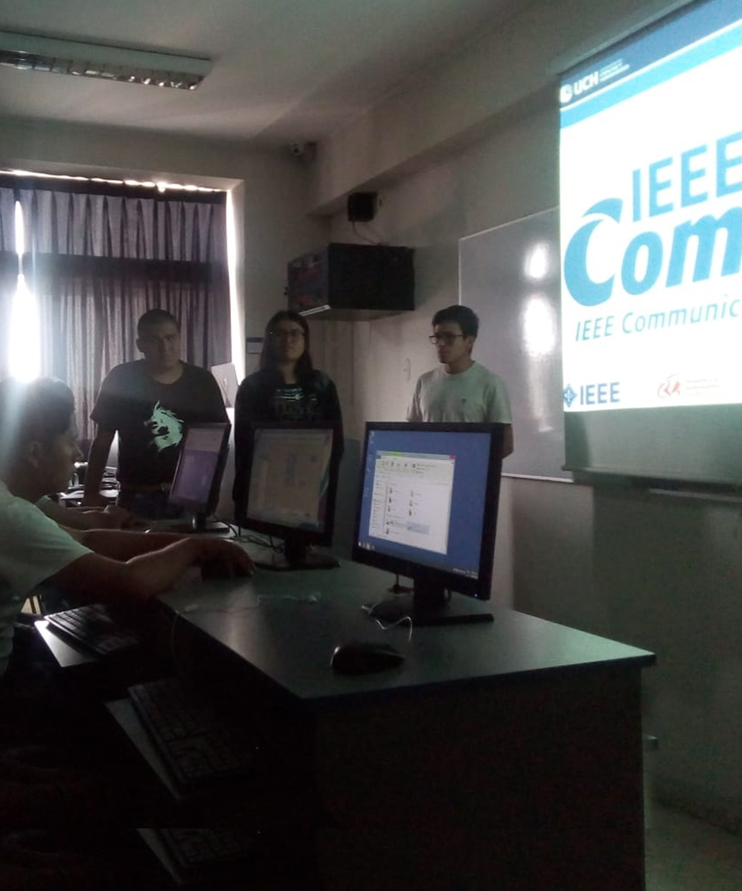
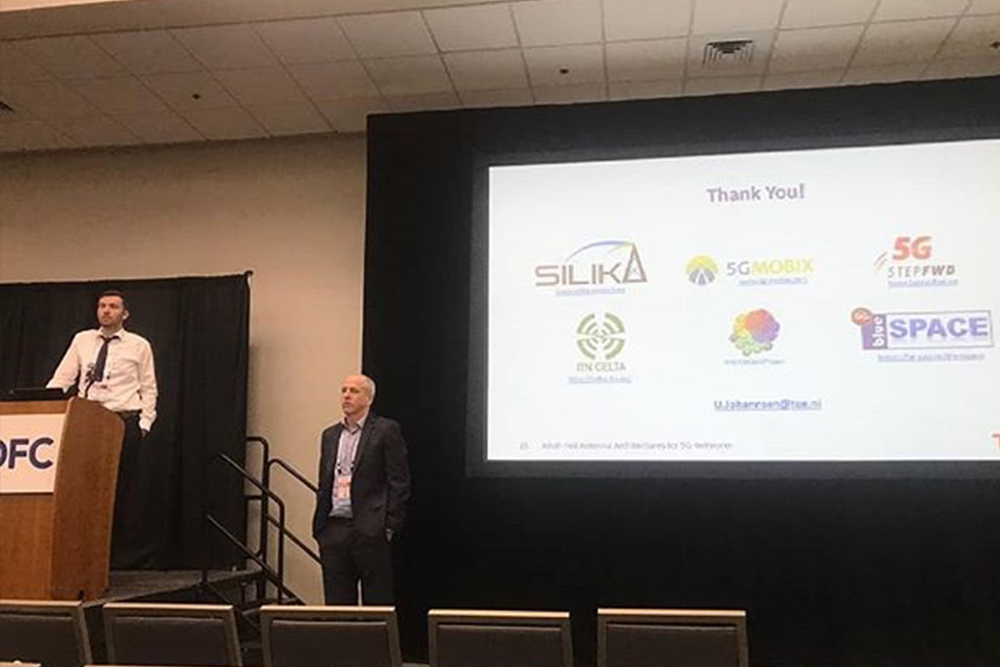

Nuesta Mision
Unir al mundo del voluntariado en armonía a través de la investigación, la aplicación, el conocimiento y la incubación de nuevas ideas de la tecnología de comunicaciones y redes.
Nuestro Objetivo Principal
Crear un entorno de integración perfecto en la que todo aquel estudiante y profesional, independiente del nivel de conocimiento que haya adquirido, pueda crear con libertad aplicaciones tecnológicas para solución de problemas de la sociedad.
"Muchas veces un simple saludo alegre y espontáneo conquista un corazón y consuela un dolor."

